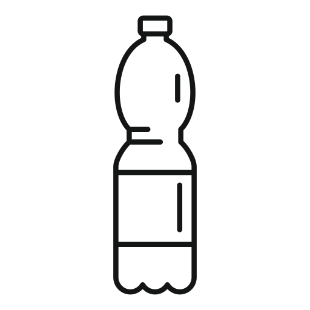

ЛИЧНЫЙ ВКЛАД
Здесь мы собрали экологичные привычки, которым может следовать каждый
🌿 Раздельный сбор мусора

Калькулятор экологического следа
🌿 Экономия ресурсов в быту
Каждый литр воды и киловатт энергии, которые мы экономим, снижают нагрузку на планету.
Вот простые привычки, которые помогают сохранять природу 🌍
Нажмите на пункты, которые есть в вашей повседневной рутине — калькулятор покажет ваш личный вклад в сохранение планеты.
Вода
- Выключать воду при чистке зубов и мытье посуды
- Запускать стиральную и посудомоечную машину только при полной загрузке
- Своевременно ремонтировать протекающие краны
- Использовать водосберегающие насадки и сантехнику
Электричество
- Использовать энергосберегающие лампы
- Отключать приборы от сети, не оставлять в режиме ожидания
- Установить таймеры или умные розетки
Тепло
- Установить умный термостат
- В жару использовать вентилятор вместо кондиционера
- Утеплить окна и двери
Бумага
- Печатать на обеих сторонах листа
- Отказаться от бумажных чеков
- Использовать облачные сервисы вместо печати
- Сдавать макулатуру
- Заменить бумажные полотенца и пакеты на тканевые
🌱 Твой экологический вклад
🌿 Экологичное питание
Наши пищевые привычки влияют не только на здоровье, но и на планету.
Вот 5 простых способов снизить экологический след
Планируйте меню
Покупайте только нужные продукты. Используйте заморозку и вакуумные контейнеры. Готовьте из остатков.
Осознанный выбор
Берите «некрасивые» овощи и фрукты. Выбирайте местные сезонные продукты на фермерских рынках.
Сокращайте мясо
Один растительный день в неделю снижает выбросы CO₂ и экономит ресурсы.
Фильтрованная вода
Используйте фильтр для воды вместо пластиковых бутылок.
Выращивайте сами
Зелень, салат и микрозелень легко растут на подоконнике или балконе.